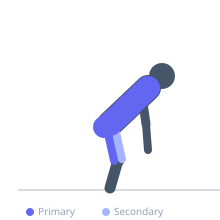
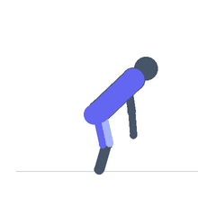

Exercise guide / Snatch Pull
Snatch Pull
The snatch pull is the snatch equivalent of the clean pull — the athlete performs the full snatch pulling mechanics with a wide snatch grip but does not turn the bar over into a catch. It trains the specific pulling pattern of the snatch (wider grip, more external hip rotation) with loads exceeding snatch maximum. The snatch pull reinforces bar path, hip drive timing, and upper trap engagement specific to the snatch.
Primary muscles
gluteus maximus
erector spinae
trapezius upper
biceps femoris long head
Secondary muscles
vastus lateralis
latissimus dorsi
Stabilizers
transverse abdominis
flexor carpi radialis
Equipment
Standard Barbell
Weight Plates
Optional
Lifting Straps


Starting position
- Bar over mid-foot, wide snatch grip, flat back, hips between shoulders and knees.
Setup
- Same starting position as the snatch. Use straps to focus on pulling mechanics without grip limitation.
Steps
- Step 1: Set up with the wide snatch grip in the starting position.
- Step 2: First pull — drive the floor away, keeping bar close and back angle constant.
- Step 3: Second pull — extend hips explosively as the bar reaches the hip crease.
- Step 4: Shrug the traps aggressively at full triple extension.
- Step 5: Allow bar to rise from shrug momentum, then lower with control.
Coaching cues
- Wide grip, bar sweeps close to the body
- Full extension before the shrug
- Rise on toes at the top
Breathing
- Brace before initiating. Hold through the pull. Exhale as bar descends.
Range of motion
- Full triple extension (ankle, knee, hip) at the top of the pull.
Tempo
- Explosive pull. Controlled lower.
Common mistakes
- Early arm bend
- Bar path too far from the body
- Not achieving full triple extension
Safety
- The wider grip lowers the hip starting position compared to the clean pull.
- Lower with control. Use straps as needed.
Training
- strength: 2–5 reps
- power: 2–4 reps
- strength: 3–5 sets
- power: 3–5 sets
- Rest: {'strength': 180, 'power': 180}